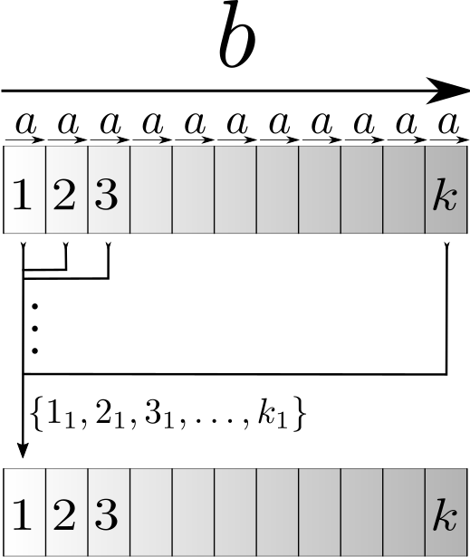

Status: Implemented
Module: catsim.selection.AStratBBlockSelector
Reference: Chang et al. (2001)
A-Stratified with B-Blocking Selector#
Motivation#
Item discrimination and difficulty are often positively correlated. Strata formed on \(a\) alone then inherit skewed difficulty distributions: early strata lack hard items and late strata lack easy ones, which hurts both precision and exposure balance. The b-blocking refinement forces every stratum to cover the whole difficulty range before discrimination-based stratification is applied.
Definition#
Following Chang, Qian and Ying (2001), as described by Barrada et al. (2006, p. 157):
Sort all items by increasing \(b_i\) and group them into consecutive blocks of
n_strataitems.Within each block, sort the items by increasing \(a_i\).
The \(j\)-th item of every block joins stratum \(j\).


Fig. 4 Items sorted by \(b\) into \(k\) blocks of n_strata items, each block sorted by \(a\). The first item of
every block, \(\{1_1, 2_1, \dots, k_1\}\), forms the first stratum, the second items the second
stratum, and so on.#
Each stratum therefore contains one item from every difficulty block, and the strata ascend in discrimination. Selection then follows the a-stratified rule: at test position \(t\), return the non-administered item of stratum \(s(t)\) whose difficulty is closest to the current estimate,
Parameters#
Parameter |
Default |
Description |
|---|---|---|
|
required |
Intended test length, at least 1. |
|
|
Number of strata and stages; |
Behavioral Contracts#
Any correct implementation must satisfy the following properties:
In every block of
n_strataitems ordered by difficulty, thej-th item by discrimination belongs to stratumj.Every stratum spans the difficulty range of the bank.
The returned item minimizes \(|b_i - \hat{\theta}|\) among the non-administered items of the active stratum.
It never returns an already administered item.
If the active stratum has no non-administered items left, it raises
NoItemsAvailableError.
References#
Chang, H.-H., Qian, J., & Ying, Z. (2001). A-stratified multistage computerized adaptive testing with b blocking. Applied Psychological Measurement, 25(4), 333-341. https://doi.org/10.1177/01466210122032181. Not openly available; Barrada et al. (2006) describe the method.
Barrada, J. R., Mazuela, P., & Olea, J. (2006). Maximum information stratification method for controlling item exposure in computerized adaptive testing. Psicothema, 18(1), 156-159. https://www.psicothema.com/pdf/3191.pdf (open access).
API Reference#
- class catsim.selection.AStratBBlockSelector(test_size: int, n_strata: int | None = None)[source]#
Bases:
AStratSelectorImplementation of the \(\alpha\)-stratified selector with \(b\) blocking [Chang et al., 2001].
- Parameters:
- test_sizeint
The number of items the test contains.
- n_strataint or None, optional
Number of strata. Default is None, which uses
test_sizestrata.
Notes
For full algorithmic details, see A-Stratified with B-Blocking Selector.